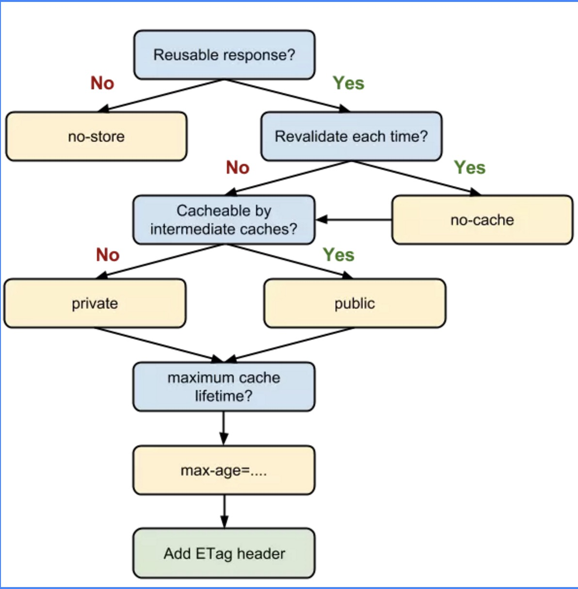

浏览器从关闭状态进行启动，然后新开 1 个页面至少需要 1 个网络进程、1 个浏览器进程、1 个 GPU 进程以及 1 个渲染进程，共 4 个进程；后续再新开标签页，浏览器、网络进程、GPU进程是共享的，不会重新启动，如果2个页面属于同一站点的话，并且从a页面中打开的b页面，那么他们也会共用一个渲染进程，否则新开一个渲染进程。
最新的 Chrome 浏览器包括：1 个浏览器（Browser）主进程、1 个 GPU 进程、1 个网络（NetWork）进程、多个渲染进程和多个插件进程。
浏览器进程：主要负责界面显示、用户交互、子进程管理，同时提供存储等功能。渲染进程：核心任务是将 HTML、CSS 和 JavaScript 转换为用户可以与之交互的网页，排版引擎 Blink 和 JavaScript 引擎 V8 都是运行在该进程中，默认情况下，Chrome 会为每个 Tab 标签创建一个渲染进程。出于安全考虑，渲染进程都是运行在沙箱模式下。GPU 进程：其实，Chrome 刚开始发布的时候是没有 GPU 进程的。而 GPU 的使用初衷是为了实现 3D CSS 的效果，只是随后网页、Chrome 的 UI 界面都选择采用 GPU 来绘制，这使得 GPU 成为浏览器普遍的需求。最后，Chrome 在其多进程架构上也引入了 GPU 进程。网络进程：主要负责页面的网络资源加载，之前是作为一个模块运行在浏览器进程里面的，直至最近才独立出来，成为一个单独的进程。插件进程：主要是负责插件的运行，因插件易崩溃，所以需要通过插件进程来隔离，以保证插件进程崩溃不会对浏览器和页面造成影响。互联网中的数据是通过数据包来传输的。数据包要在互联网上进行传输，就要符合网际协议(IP)，互联网上不同的在线设备都有唯一的地址，地址只是一个数字，只要知道这个具体的地址，就可以往这里发送信息。
如果要想把一个数据包从主机 A 发送给主机 B，那么在传输之前，数据包上会被附加上主机 B 的 IP 地址信息，这样在传输过程中才能正确寻址。额外地，数据包上还会附加上主机 A 本身的 IP 地址，有了这些信息主机 B 才可以回复信息给主机 A。这些附加的信息会被装进一个叫 IP 头的数据结构里。IP 头是 IP 数据包开头的信息，包含 IP 版本、源 IP 地址、目标 IP 地址、生存时间等信息。
IP 是非常底层的协议，只负责把数据包传送到对方电脑，但是对方电脑并不知道把数据包交给哪个程序，是交给浏览器还是交给王者荣耀？因此，需要基于 IP 之上开发能和应用打交道的协议，最常见的是用户数据包协议（User Datagram Protocol)，简称UDP和传输控制协议（Transmission Control Protocol）,简称TCP.
基本传输过程为：
UDP 头，组成新的 UDP 数据包，再将新的 UDP 数据包交给网络层| 特性 | TCP | UDP |
|---|---|---|
| 是否连接 | 面向连接 | 面向非连接 |
| 传输可靠性 | 可靠 | 不可靠 |
| 应用场合 | 传输大量数据 | 传输少量数据 |
| 速度 | 慢 | 快 |
ACK：此标志表示应答域有效，就是说前面所说的TCP应答号将会包含在TCP数据包中；有两个取值：0和1，为1的时候表示应答域有效，反之为0。
TCP协议规定，只有ACK=1时有效，也规定连接建立后所有发送的报文的ACK必须为1。
SYN(SYNchronization) ： 在连接建立时用来同步序号。当SYN=1而ACK=0时，表明这是一个连接请求报文。对方若同意建立连接，则应在响应报文中使SYN=1和ACK=1. 因此, SYN置1就表示这是一个连接请求或连接接受报文。
FIN （finis）即完，终结的意思， 用来释放一个连接。当 FIN = 1 时，表明此报文段的发送方的数据已经发送完毕，并要求释放连接。
TCP连接建立后，浏览器就可以利用HTTP／HTTPS协议向服务器发送请求了。服务器接受到请求，就解析请求头，如果头部有缓存相关信息如if-none-match与if-modified-since，则验证缓存是否有效，若有效则返回状态码为304，若无效则重新返回资源，状态码为200.
主要原因是第一次加载页面过程中，缓存了一些耗时的数据。
那么，哪些数据会被缓存呢？
主要就是在浏览器本地把对应的 IP 和域名关联起来，这样在进行DNS解析的时候就很快。
是指存在内存中的缓存。从优先级上来说，它是浏览器最先尝试去命中的一种缓存。从效率上来说，它是响应速度最快的一种缓存。
内存缓存是快的，也是“短命”的。它和渲染进程“生死相依”，当进程结束后，也就是 tab 关闭以后，内存里的数据也将不复存在。
先看一张经典的流程图，结合理解

浏览器缓存，也称Http缓存，分为强缓存和协商缓存。优先级较高的是强缓存，在命中强缓存失败的情况下，才会走协商缓存。
强缓存
强缓存是利用 http 头中的 Expires 和 Cache-Control 两个字段来控制的。强缓存中，当请求再次发出时，浏览器会根据其中的 expires 和 cache-control 判断目标资源是否“命中”强缓存，若命中则直接从缓存中获取资源，不会再与服务端发生通信。
实现强缓存，过去我们一直用expires。当服务器返回响应时，在 Response Headers 中将过期时间写入 expires 字段。像这样
expires: Wed, 12 Sep 2019 06:12:18 GMT可以看到，expires 是一个时间戳，接下来如果我们试图再次向服务器请求资源，浏览器就会先对比本地时间和 expires 的时间戳，如果本地时间小于 expires 设定的过期时间，那么就直接去缓存中取这个资源。
从这样的描述中大家也不难猜测，expires 是有问题的，它最大的问题在于对“本地时间”的依赖。如果服务端和客户端的时间设置可能不同，或者我直接手动去把客户端的时间改掉，那么 expires 将无法达到我们的预期。
考虑到 expires 的局限性，HTTP1.1 新增了Cache-Control字段来完成 expires 的任务。expires 能做的事情，Cache-Control 都能做；expires 完成不了的事情，Cache-Control 也能做。因此，Cache-Control 可以视作是 expires 的完全替代方案。在当下的前端实践里，我们继续使用 expires 的唯一目的就是向下兼容。
cache-control: max-age=31536000在 Cache-Control 中，我们通过max-age来控制资源的有效期。max-age 不是一个时间戳，而是一个时间长度。在本例中，max-age 是 31536000 秒，它意味着该资源在 31536000 秒以内都是有效的，完美地规避了时间戳带来的潜在问题。
Cache-Control 相对于 expires 更加准确，它的优先级也更高。当 Cache-Control 与 expires 同时出现时，我们以 Cache-Control 为准。
协商缓存
协商缓存依赖于服务端与浏览器之间的通信。协商缓存机制下，浏览器需要向服务器去询问缓存的相关信息，进而判断是重新发起请求、下载完整的响应，还是从本地获取缓存的资源。如果服务端提示缓存资源未改动（Not Modified），资源会被重定向到浏览器缓存，这种情况下网络请求对应的状态码是 304。
协商缓存的实现,从 Last-Modified 到 Etag,Last-Modified 是一个时间戳，如果我们启用了协商缓存，它会在首次请求时随着 Response Headers 返回：
Last-Modified: Fri, 27 Oct 2017 06:35:57 GMT随后我们每次请求时，会带上一个叫 If-Modified-Since 的时间戳字段，它的值正是上一次 response 返回给它的 last-modified 值：
If-Modified-Since: Fri, 27 Oct 2017 06:35:57 GMT服务器接收到这个时间戳后，会比对该时间戳和资源在服务器上的最后修改时间是否一致，从而判断资源是否发生了变化。如果发生了变化，就会返回一个完整的响应内容，并在 Response Headers 中添加新的 Last-Modified 值；否则，返回如上图的 304 响应，Response Headers 不会再添加 Last-Modified 字段。
使用 Last-Modified 存在一些弊端，这其中最常见的就是这样两个场景：
这两个场景其实指向了同一个 bug——服务器并没有正确感知文件的变化。为了解决这样的问题，Etag 作为 Last-Modified 的补充出现了。
Etag 是由服务器为每个资源生成的唯一的标识字符串，这个标识字符串可以是基于文件内容编码的，只要文件内容不同，它们对应的 Etag 就是不同的，反之亦然。因此 Etag 能够精准地感知文件的变化。
Etag 的生成过程需要服务器额外付出开销，会影响服务端的性能，这是它的弊端。因此启用 Etag 需要我们审时度势。正如我们刚刚所提到的——Etag 并不能替代 Last-Modified，它只能作为 Last-Modified 的补充和强化存在。
Etag 在感知文件变化上比 Last-Modified 更加准确，优先级也更高。当 Etag 和 Last-Modified 同时存在时，以 Etag 为准。
Service Worker 是一种独立于主线程之外的 Javascript 线程。它脱离于浏览器窗体，因此无法直接访问 DOM。这样独立的个性使得 Service Worker 的“个人行为”无法干扰页面的性能，这个“幕后工作者”可以帮我们实现离线缓存、消息推送和网络代理等功能。我们借助 Service worker 实现的离线缓存就称为 Service Worker Cache。
Service Worker 的生命周期包括 install、active、working 三个阶段。一旦 Service Worker 被 install，它将始终存在，只会在 active 与 working 之间切换，除非我们主动终止它。这是它可以用来实现离线存储的重要先决条件.
Push Cache 是指 HTTP2 在 server push 阶段存在的缓存。这块的知识比较新，应用也还处于萌芽阶段，应用范围有限不代表不重要——HTTP2 是趋势、是未来。在它还未被推而广之的此时此刻，我仍希望大家能对 Push Cache 的关键特性有所了解：